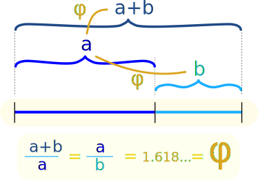
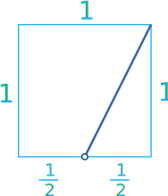
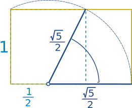
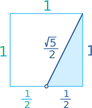
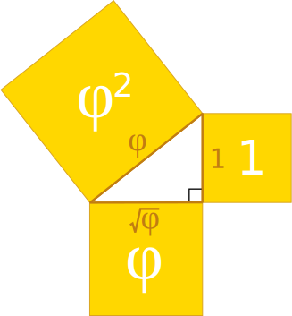

Golden Ratio
The golden ratio (symbol is the Greek letter "phi" shown at left)
is a special number approximately equal to 1.618
It appears many times in geometry, art, architecture and other areas.
The Idea Behind It
|
We find the golden ratio when we divide a line into two parts so that: the whole length divided by the long part
is also equal to
the long part divided by the short part |

Have a try yourself (use the slider):
Beauty

This rectangle has been made using the Golden Ratio, Looks like a typical frame for a painting, doesn't it?
Some artists and architects believe the Golden Ratio makes the most pleasing and beautiful shape.
Do you think it is the "most pleasing rectangle"?
Maybe you do or don't, that is up to you!
Many buildings and artworks have the Golden Ratio in them, such as the Parthenon in Greece, but it is not really known if it was designed that way.
The Actual Value
The Golden Ratio is equal to:
1.61803398874989484820... (etc.)
The digits just keep on going, with no pattern. In fact the Golden Ratio is known to be an Irrational Number, and I will tell you more about it later.
Formula
We saw above that the Golden Ratio has this property:
ab = a + ba
We can split the right-hand fraction like this:
ab = aa + ba
ab is the Golden Ratio φ, aa=1 and ba=1φ, which gets us:
φ = 1 + 1φ
So the Golden Ratio can be defined in terms of itself!
Let us test it using just a few digits of accuracy:
With more digits we would be more accurate.
Calculating It
You can use that formula to try and calculate φ yourself.
First guess its value, then do this calculation again and again:
- A) divide 1 by your value (=1/value)
- B) add 1
- C) now use that value and start again at A
With a calculator, just keep pressing "1/x", "+", "1", "=", around and around.
I started with 2 and got this:
| value | 1/value | 1/value + 1 |
|---|---|---|
| 2 | 1/2 = 0.5 | 0.5 + 1 = 1.5 |
| 1.5 | 1/1.5 = 0.666... | 0.666... + 1 = 1.666... |
| 1.666... | 1/1.666... = 0.6 | 0.6 + 1 = 1.6 |
| 1.6 | 1/1.6 = 0.625 | 0.625 + 1 = 1.625 |
| 1.625 | 1/1.625 = 0.6153... | 0.6154... + 1 = 1.6153... |
| 1.6153... |
It gets closer and closer to φ the more we go.
But there are better ways to calculate it to thousands of decimal places quite quickly.

Drawing It
Here is one way to draw a rectangle with the Golden Ratio:
- Draw a square of size "1"
- Place a dot half way along one side
- Draw a line from that point to an opposite corner

- Now turn that line so that it runs along the square's side
- Then you can extend the square to be a rectangle with the Golden Ratio!
(Where did √52 come from? See footnote*)
A Quick Way to Calculate
That rectangle above shows us a simple formula for the Golden Ratio.
When the short side is 1, the long side is 12+√52, so:
φ = 12 + √52
The square root of 5 is approximately 2.236068, so the Golden Ratio is approximately 0.5 + 2.236068/2 = 1.618034. This is an easy way to calculate it when you need it.
Interesting fact: the Golden Ratio is also equal to 2 × sin(54°), get your calculator and check!
Fibonacci Sequence
There is a special relationship between the Golden Ratio and the Fibonacci Sequence:
0, 1, 1, 2, 3, 5, 8, 13, 21, 34, ...
(The next number is found by adding up the two numbers before it.)
And here is a surprise: when we take any two successive (one after the other) Fibonacci Numbers, their ratio is very close to the Golden Ratio.
In fact, the bigger the pair of Fibonacci Numbers, the closer the approximation. Let us try a few:
|
A |
B |
B/A | |
|---|---|---|---|
|
2 |
3 |
1.5 | |
|
3 |
5 |
1.666666666... | |
|
5 |
8 |
1.6 | |
|
8 |
13 |
1.625 | |
|
... |
... |
... | |
|
144 |
233 |
1.618055556... | |
|
233 |
377 |
1.618025751... | |
|
... |
... |
... |
We don't have to start with 2 and 3, here I randomly chose 192 and 16 (and got the sequence 192, 16,208,224,432,656, 1088, 1744, 2832, 4576, 7408, 11984, 19392, 31376, ...):
| A |
B |
B / A |
|
|---|---|---|---|
|
192 |
16 |
0.08333333... | |
|
16 |
208 |
13 | |
|
208 |
224 |
1.07692308... | |
|
224 |
432 |
1.92857143... | |
|
... |
... |
... | |
|
7408 |
11984 |
1.61771058... | |
|
11984 |
19392 |
1.61815754... | |
|
... |
... |
... |
The Most Irrational ...
I believe the Golden Ratio is the most irrational number. Here is why ...
| We saw before that the Golden Ratio can be defined in terms of itself, like this: |
| φ = 1 + 1φ |
| (In numbers: 1.61803... = 1 + 1/1.61803...) |
| That can be expanded into this fraction that goes on for ever (called a "continued fraction"): |
 |
So, it neatly slips in between simple fractions.
Note: many other irrational numbers are close to rational numbers (such as Pi = 3.141592654... is pretty close to 22/7 = 3.1428571...)

Pentagram
No, not witchcraft! The pentagram is more famous as a magical or holy symbol. And it has the Golden Ratio in it:
- a/b = 1.618...
- b/c = 1.618...
- c/d = 1.618...
Read more at Pentagram.
Other Names
The Golden Ratio is also sometimes called the golden section, golden mean, golden number, divine proportion, divine section and golden proportion.
Footnotes for the Keen
* Where did √5/2 come from?

With the help of Pythagoras:
c2 = a2 + b2
c2 = (12)2 + 12
c2 = 14 + 1
c2 = 54
c = √(54)
c = √52
Solving using the Quadratic Formula
We can find the value of φ this way:
Which is a Quadratic Equation and we can use the Quadratic Formula:
φ = −b ± √(b2 − 4ac) 2a
Using a=1, b=−1 and c=−1 we get:
φ = 1 ± √(1+ 4) 2
And the positive solution simplifies to:
φ = 12 + √52
Ta da!
Kepler Triangle
That inspired a man called Johannes Kepler to create this triangle:

It is really cool because:
- it has Pythagoras and φ together
- the ratio of the sides is 1 : √φ : φ, making a Geometric Sequence.